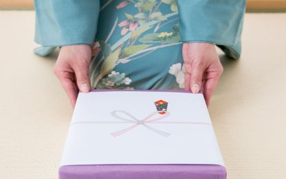

あげる

YouTube · video
そして、和尚さんは、よく絵を描いて、人にあげます。
"And the monk often paints pictures and gives them to people." [a story about a temple monk]
あげる means to give: something goes away from you (or the person the story is about) to someone else.
The thing gets を, the person who receives gets に: 人にあげます, "gives to people". It never goes towards you: when someone gives something to you, that's くれる.
Polite: あげます, あげました. Casual: あげる, あげた.
Examples
A coworker asks what you did with your old bike.
弟にあげました。
"I gave it to my little brother."
The receiver gets に: 弟に. Who gave? You, so no need to say it.
PoliteYour friend admires your scarf. You don't wear it anymore.
それ、あげるよ。
"You can have it."
Literally "I'll give it (to you)". From you, to them: あげる.
CasualIt's Valentine's Day. Your friend is holding a box of chocolates.
誰にあげるの？
"Who are you giving them to?"
It also works for other people giving: here your friend gives, someone else gets.
CasualAt the park, a child asks if they can feed your dog.
犬にパンをあげないでください。
"Please don't give the dog bread."
Feeding an animal is also あげる: 犬に + パンを.
PoliteWith and without
友達に本をあげました。
"I gave my friend a book." The book goes away from you, to your friend.
Sentence mining
Core deck Core
赤ちゃんにミルクをあげた。
"I fed the baby some milk."
Feeding is giving: receiver + に, thing + を.
Core deck Core
この本、あなたにあげます。
"I'll give you this book."
あなたに: "to you". In real talk you'd usually drop it.
Core deck Core
甥と姪にお年玉をあげたの。
"I gave New Year's money to my nephew and niece."
お年玉: money given to kids at New Year.
Core deck Core
みんなにお菓子をあげましょう。
"Let's give everyone some sweets."
あげましょう: "let's give".
Core deck Core
お菓子を友達に半分あげた。
"I gave half the sweets to a friend."
を and に can swap places. Same meaning.
Core deck Core
この本を君にあげます。
"I'm going to give you this book."
君: a casual "you", often from someone older to someone younger.

Core deck Core
こちらを差し上げます。
"This is for you."
差し上げる: the extra-polite あげる, for customers or people above you.